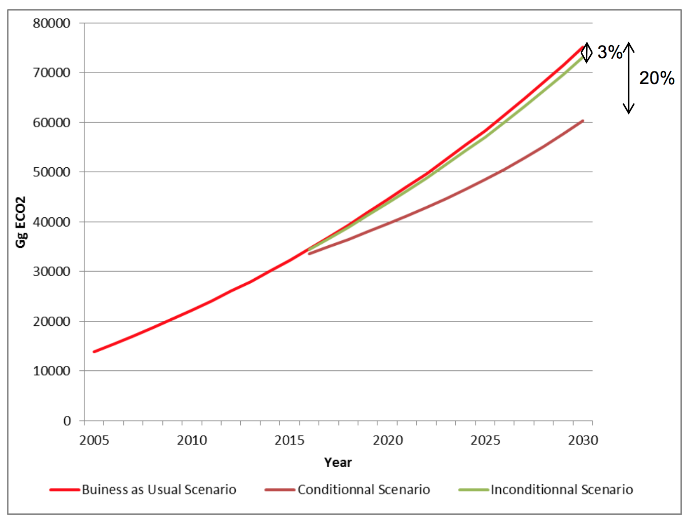

September 2015
Burundi is a landlocked country at the heart of Africa’s Great Lakes Region, located between the meridians 29°00’-30°25 East and parallels 2°20°-4°25’ South. It has an area of 27,834 km² and belongs to two major river basins: the NileBasin, accounting for 13,800 km² of the country’s territory, and the CongoBasin, covering 14,034 km². Its mostly rural population, with an urbanization rate of around 10.4%, was estimated at 8,053,574 at the time of the 2008 census, with an average density of 310 inhabitants/km².
The Burundian economy is dominated by the primary sector, which accounts for nearly half of its gross domestic product (GDP) and close to 80% of its export income; the secondary sector (industry and handicraft) represents just 17-18% of GDP, and the tertiary sector, only about one third of GDP. The current production structure, dominated by subsistence farming, makes the economy very vulnerable and fragile due to its dependency on climate conditions.
Electrical power consumption in Burundi, amounting to 25 kWh/person/year, represents just 4% of the energy balance.
In Burundi, activities relating to climate change were marked in particular by the development and publication of the first and second national communications under the UNFCCC. At the same time, Burundi also prepared its National Adaptation Programme of Action to climate change (NAPA). The actions identified in the NAPA covered the key sectors of the Burundian economy. As various sectoral adaptation and vulnerability assessment studies have shown, climate change affects every sector of the country’s economy, particularly agriculture.
The prospects for sustainable ecological growth were defined through Burundi Vision 2025 and translated into a short term action plan as part of the Growth and Poverty Reduction Strategic Framework covering the period of 2012-2015. In the medium to long term, the Government plans to engage in a transition toward a green economy. Burundi Vision 2025 makes a firm commitment to prioritizing the country’s protection and rational management of the environment such that Burundians can live in a protected, properly managed setting.
The Government has stated itsvision of the fight against climate change as follows: "A State that promotes development that is resilient to the harmful effects of climate change".
At the institutional level, the Ministry of Water, the Environment, Land Management and Urban Planning, with its departments and personalized institutionssuch asIGEBU and OBPE, handles matters relating to climate change. For the fulfilment of its mission, the Ministry enjoys the support of frameworks for dialogue such as the National Environment Commission, the Sectoral Group on Water, Sanitation and the Environment (GSEAE), the National Water Partnership (PNE-Bu), and the National Platform for Risk Prevention and Disaster Management.
In the framework of its Intended Nationally Determined Contribution (INDC), Burundi intends to reaffirm its determination to contribute to global efforts to reduce greenhouse gas emissions and to strengthen its resilience to climate change while continuing to meet its own development challenges.
Studies conducted for the initial national communication on climate change and the evolution of climate parameters in Burundi through 2050, based on the general circulation model, show that the average annual temperature will increase by 1°C to 3°C. Rainfall will rise by roughly 10%, and the precipitation regime will be disrupted such that there will only be two seasons remaining, each lasting six months: a rainy season from November to April, followed by a dry season.
These climate changes will engender a large number of risks associated with the following phenomena: (i) season creep; (ii) flooding of swamps and lowlands; (iii) land degradation and loss of soil fertility; (iv) shortage of groundwater resources; (v) extreme weather events (hail, violent showers, heavy winds, etc.); (vi) changes to the growing seasons of crops and forests; and (vii) unpredictable movements of pests.
According to an integrated analysis of Burundi’s vulnerability, conducted as part of the ACCES (Climate Change Adaptation for Soil and Water Resources Conservation) Project, it was found that the country’s “hotspots of vulnerability” are located in the north and northwest. The slope of the ridge (and not the ridge itself) leading to the Imbo Plain to the west, the topographical structures to the north and the central plateau are the regions most vulnerable to erosion. The main causes are the highly variable relief and the pronounced sensitivity of those regions to climate variability.
Table 1: Major impacts relating to climate change in Burundi (Source: NAPA 2007)
| Sector | Impacts |
|---|---|
| Water |
|
| Energy |
|
| Agriculture and livestock farming |
|
| Health |
|
| Landscapes |
|
| Terrestrial ecosystems (forests) |
|
To reduce Burundi’s vulnerability and boost its resilience, the country’s needs have been identified. These relate to human, institutional, technical and financial capacity- building, as well as technology transfers.
The country needs to:
| Need | Objectives and Description |
|---|---|
| Key measure: Development of access to water while enhancing the efficiency of its use | |
| Water resources control and management |
|
| Key measure: Promotion of intensified water-efficient agriculture | |
| Intensification and diversification of agricultural production |
|
| Key measure: Security for animal and fishing production, and promotion of associations | |
| Security for livestock farming and support for the association of agriculture and livestock |
|
| Support for the exploitation of fishing resources |
|
| Key measure: Support for facilities that use renewable energy sources | |
| Improvement of the population’s well-being |
|
| Key measure: Communications on climate risks and adaptation scenarios | |
| Knowledge of spatial and temporal changes to the environment |
|
Specifically concerning adaptation to climate change, the priorities are outlined in the following documents:
Table 2: Sectoral policies and strategies in place for adaptation to climate change
| Sector | Current Policy and Strategy Document | Priorities |
|---|---|---|
| Water |
|
|
| Energy |
|
|
| Forestry | National Forestry Policy of Burundi (2012) |
|
| Agriculture & Livestock |
|
|
The following programmes were identified as part of the National Strategy and Action Plan on Climate Change (2012):
| Programme name | Components |
|---|---|
| Climate risk adaptation and management | Integrated water resources management by a small hydrological unit Integrated management of climate risk and forecasts over time (by means of probabilities and forward-looking studies) so as to be able to take action in advance Protection of aquatic and land-based ecosystems Coaching of the population to develop their resilience to climate change Development of institutional and operational capacities to coordinate programmes that are resilient to climate change Research on the vulnerability and adaptation of socioeconomic sectors to climate change Establishment of functional monitoring and evaluation mechanisms for climate change, as well as knowledge management and information mechanisms Research and extension of drought-resistant forest species Promotion of climate-smart agriculture (agrometeorology) |
| Capacity-building, knowledge management and communication | Enhancement of data and information management and distribution mechanisms Reinforcement of climate change impact tracking systems by means of observations and investigations Improvement of scientific and technological research on adapting to climate change, supported by climate observations Improvement of the legislative and regulatory framework for handling climate change as part of investment programmes and the promotion of public-private partnerships Strengthening of the information and data communication and exchange system |
In terms of mitigation, the desired INDC for Burundi should make it possible to meet the sustainability objectives defined in national policies and strategies.
| Expected rate of reduction | ||
|---|---|---|
| Type of contribution | Unconditional contribution | Reduction of greenhouse gas emissions by 3% compared to the business-as-usual (BAU) scenario for 2030 |
| Conditional contribution | Reduction of greenhouse gas emissions by 20%, beginning in 2016, compared to the business-as-usual scenario for 2030 | |
| Baseline year | 2005 | |
| Target year | 2030 | |
| Total reduction in emissions by 2030 | 1,958 Gg CO2e for the unconditional objective and 14,897 Gg CO2e for the conditional objective | |
The table below presents the emissions for the baseline year and the business-as- usual (BAU) scenario, the emissions for the unconditional objective and the emissions for the conditional objective, whose implementation will depend on the financial support of the international community.
Under the National Reforestation Programme, Burundi has undertaken to increase its carbon dioxide gas well through 4,000 hectares of annual reforestation over the course of 15 years, beginning in 2016.
In the energy sector, Burundi is in the process of building three hydroelectric power plants. This programme will increase the country’s electrification rate to 35%.
Table 3: Emissions by mitigation objective
| OBJECTIVE | Percentage | CO2e emissions (Gg) |
|---|---|---|
| Unconditional objective (2030) % | 3% | 1,958 |
| Conditional objective (2030) % | 20% | 14,897 |
| Unconditional objective (2025) % | 2% | 1,305 |
| Conditional objective (2025) % | 17% | 9,897 |
| Unconditional objective (2020) % | 1% | 653 |
| Conditional objective (2020) % | 11% | 4,897 |

Table 4: Scope and scale of the contribution
| Sector | Gas(es) | Sub-sector(s) | Geographic scope |
|---|---|---|---|
| Energy | CO2, CH4 and N2O | Fuel combustion activities | Nationwide |
| Agriculture & livestock | CH4 and N2O | Agricultural soils | Nationwide |
| Land use and forestry | CO2 | Forestland | Nationwide |
The choice of assumptions is guided by the development planning orientations defined in Burundi Vision 2025 and the national operationalization policies and strategies for the Vision.
The GHG inventories were performed on five modules identified by the IPCC: Industrial Processes, Energy, Agriculture, Land Use, Land Use Change and Forestry (LULUCF), as well as the Waste module.
100 years of GWP values were used for the conversion to CO2 equivalents (IPCC Assessment Report). These numbers were 21 for CH4 and 310 for N2O.
The policy documents thattake GHG emissions generating activities into consideration - and that were used to formulate the assumptions and objectives - appear in Table 5.
Table 5: Documents used to formulate assumptions and objectives
| Sector | Current Policy and Strategy Documents |
|---|---|
| Energy | Sectoral Strategy for the Energy Sector in Burundi (2011) National Environment Strategy (SNEB, 1997) |
| Land use and forestry | National Forestry Policy of Burundi (2012) National Strategy and Action Plan for Biodiversity (2013-2020) |
| Agriculture | National Agricultural Strategy, 2008-2015 (2008) National Sustainable Land Use Strategy (2007) National Action Programme to Fight Land Degradation (2005) National Strategy and Action Plan to Fight Soil Degradation (2011-2016) National Agricultural Investment Plan (2012-2017) |
| Vision Burundi 2025 Strategic Framework for Growth (2012) | |
| All sectors | First and second national communications on climate change (2001 and 2010) National Adaptation Planof Action to climate change (2007) Summary report on greenhouse gas inventories (2009) Summary report on GHG emissions mitigation studies (2009) National Climate Change Policy (2013) National Strategy and Action Plan on Climate Change (2013) |
In terms of compensation for any loss of revenue or for the restriction of certain economic activities due to the implementation of the INDC programme, Burundi will rely on international greenhouse gas emissions compensation mechanisms and on current national legislation.
In terms of forestry in particular, the plan is to promote the development of ecosystem services.
Concerning carbon counting and verification methods, Burundi will conform to the IPCC’s guidelines.
Limiting the rise in GHG emissions presents a major challenge for Burundi, in view of its national context. Economically, Burundi is ranked a least developed country (LDC), with per capita GDP ofUS $282 (in 2012).
Burundi also has significant structural vulnerability due in particular to the country’s landlocked status and its exposure to weather and natural hazards. According to United Nations statistics, Burundi’s economic vulnerability index is 56.81 compared with an average of 45.7 in 2012 across all of the least developed countries. Faced with these development challenges, Burundi’s contribution is an ambitious one, as it plans for a 3% reduction in its emissions by 2030 for the unconditional scenario, and by 20% by that same year for its conditional objective.
The Government of Burundi will implement the INDC through the Ministry of the Environment, which is the government institution in charge of ensuring the implementation of international conventions relating to the environment. It will used its customized departments and institutions like IGEBU and the OBPE, which handle questions associated with climate change, but also frameworks for dialogue such as the National Environment Commission, the Sectoral Group on Water, Sanitation and the Environment (GSEAE), the National Water Partnership (PNE-Bu), and the National Platform for Risk Prevention and Disaster Management.
Despite the non-negligible step already taken to create and build capacities, national experts are still insufficient and have not yet acquired significant proficiency in the tools and methodologies available to produce GHG emissions inventories, climate change vulnerability and adaptation studies, and GHG emissions mitigation studies, as well as solid proficiency in the procedures used to compile financing applications for the available funding mechanisms. As a result, capacity-building will be needed to offset the following:
Burundi does not have the technical resources to do research and development in the field of climate change and has no national programme on the subject. As part of the INDC’s implementation, Burundi’s technology transfer actions will pertain to:
Gender, youth and vulnerable groups are concerns that have not always been taken into account in Burundi’s national and sectoral socioeconomic development plans. In its Vision 2025, the Government of Burundi considers these to be cross-cutting issues to be incorporated into all development programmes. The same will apply to implementation of the INDC.
As was underscored above, most of the climate change adaptation actions identified in previously developed national and sectoral action plans have not yet been implemented for want of the financial means to do so. The table below summarizes the financial needs for implementation of the INDC in the form of programmes.
Table 6: Programmes and costs associated with implementation of the INDC (Source: National Strategy and Action Plan on Climate Change, 2012)
| Programme Name | Components | Cost (in US$K) |
|---|---|---|
| Climate risk adaptation and management |
|
3,719 |
| Mitigation of greenhouse gas emissions and low carbon developments |
|
1,446,118 |
| Promotion of research & development and technology transfers |
|
25,787 |
| Capacity-building, knowledge management and communication |
|
3,465 |
| Reforestation and agroforestry[1] |
|
10,000 |
| Extension of improved kilns[1] |
|
1,500 |
| Extension of improved domestic and artisanal ovens[1] |
|
3,000 |
ACCES: Climate Change Adaptation for Soil and Water Resources Conservation Project
CC: Climate change
CDM: Clean Development Mechanism
CO2e: Carbon dioxide equivalent
GDP: Gross domestic product
Gg CO2e: Gigagram of carbon dioxide equivalent
Gg: Gigagram
GHGI: Greenhouse gas inventory
GSEAE: Sectoral Group on Water, Sanitation and the Environment
IGEBU: Geographic Institute of Burundi
INDC: Intended Nationally Determined Contribution
INECN: National Institute for the Environment and Nature Conservation
IPCC: Intergovernmental Panel on Climate Change
LULUCF: Land use, land use change and forestry
MEEATU: Ministry of Water, Environment, Land Management and Urban Planning
NAPA: National Adaptation Programme of Action
OBPE: Burundian Office for the Protection of the Environment
SFPR: Strategy Framework for Poverty Reduction
UNFCCC: United Nations Framework Convention on Climate Change